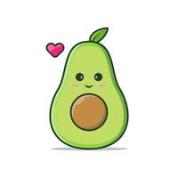

A custom dynamic memory allocator with splitting, coalescing, and first-fit placement.
Visit page →Macros and automation scripts to streamline spreadsheet workflows.
Visit page →A pipelined RISC-V CPU with ALU, control unit, and memory hierarchy.
Visit page →